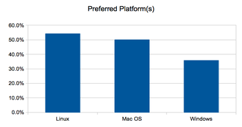

Who Are You?
We asked participants in this year's workshops to tell us a bit about themselves. So far, 121 have done so, and their responses are summarized below.
| Age |  |
|
| <20 | 0.0% | |
| 20-25 | 18.3% | |
| 26-30 | 31.7% | |
| 31-35 | 25.0% | |
| 36-40 | 9.2% | |
| 41-45 | 4.2% | |
| 46-50 | 4.2% | |
| >50 | 7.5% | |
| Gender | ||
| Female | 26.9% | |
| Male | 73.1% | |
| Occupation |  |
|
| Undergrad | 2.6% | |
| Grad student | 55.7% | |
| Post-doc | 13.9% | |
| Faculty | 9.6% | |
| Support | 13.0% | |
| Industry | 5.2% | |
| Preferred Platforms |  | |
| Linux | 54.2% | |
| Mac OS | 50.0% | |
| Windows | 35.8% | |
Platforms sum to more than 100% because multiple responses were allowed; I was surprised by the number of Linux responses, since we only ever had a handful of Linux laptops in the room, but looking at the responses in more detail, it appears that many of the people who use Mac laptops use Linux servers for production runs.
We had a bit more trouble classifying respondents' by discipline, but our best guess is:
| 11: | bioinformatics |
| 10: | ecology |
| 8: | chemistry, astronomy |
| 7: | neuroscience, evolutionary biology |
| 6: | support, marine biology |
| 5: | planetary science, physics, biology |
| 4: | engineering, computer science |
| 3: | oceanography, nuclear engineering |
| 2: | programming, mathematics, geophysics, geography, genetics, electrical engineering, economics |
| 1: | veterinary medicine, social science, oncology, immunology, geology, genomics, |
| fisheries and wildlife, epidemiology, education, civil engineering, business, biophysics, | |
| biomedical imaging, agriculture |